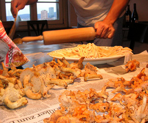

Eierschwämme (Pfifferlinge) an selbstgemachten Eiernudeln
5,5 von 6Man nehme 2 Freunde und ein super Babe, einen Toyota Celica, gutes Schuhwerk sowie einige Papiertüten. Man treffe sich Sonntags 13 Uhr und fahre in den Schwarzwald. Nun werden die reichlich vorhandenen Chanterelles eingesammelt. Nach einer Vesperplatte in einem Gasthof werden die Pilze geputzt und mit Zwiebeln und Knoblauch angedämpft, mit etwas Weisswein und Gemüssebouillon abgelöscht. Danach mit etwas Rahm ablöschen und Petersilie dazu geben. Das ganze am besten mit Pasta al Chitarra servieren.
